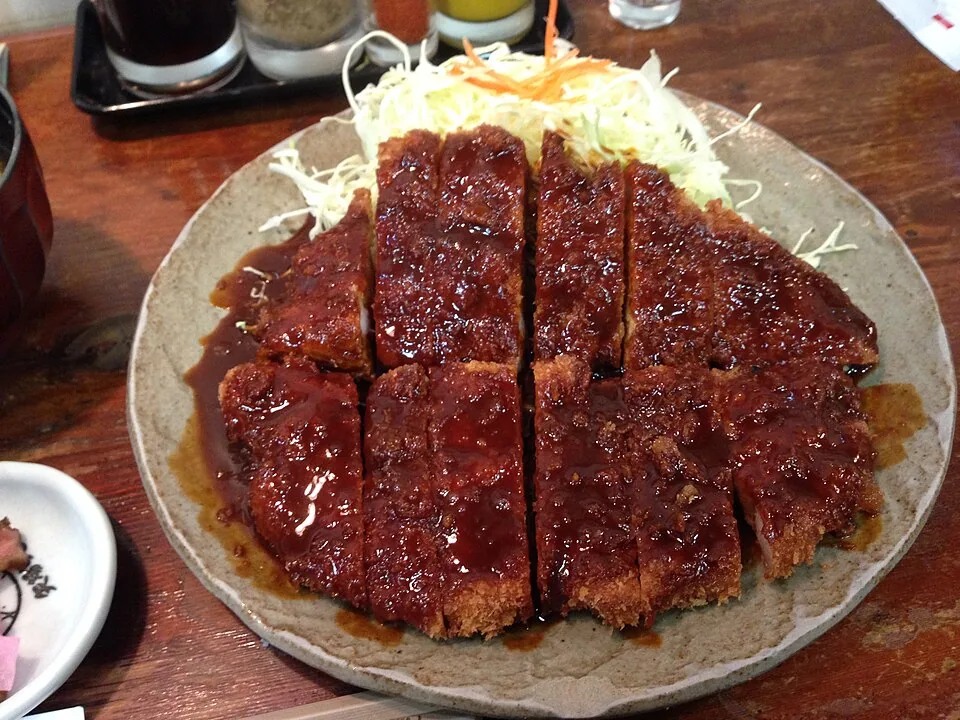
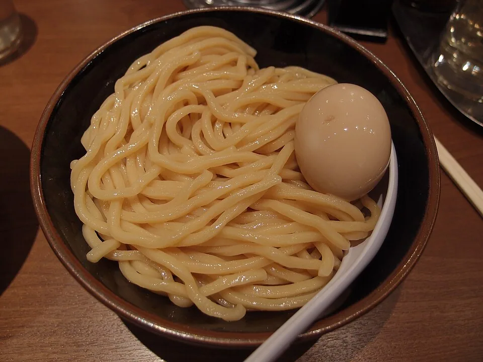
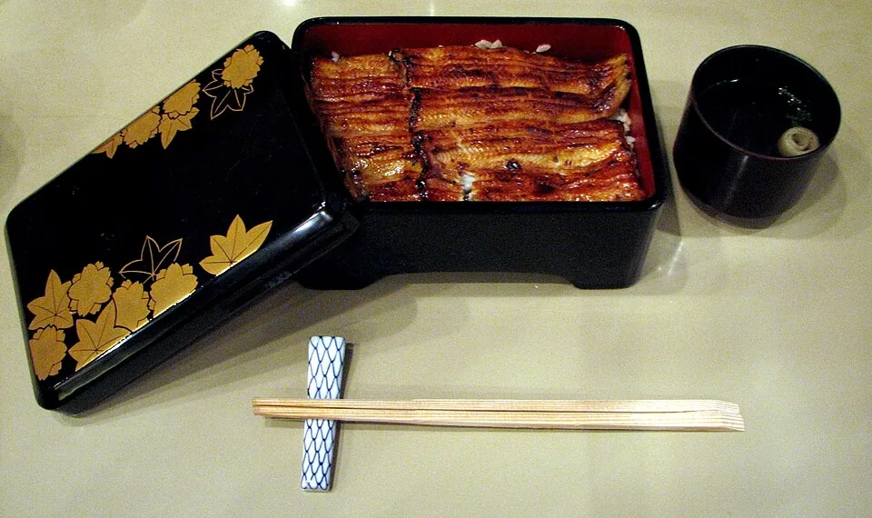

McDo, KFC, Yoshinoya, CoCo Ichibanya and Marugame are familiar from the Philippines. Here’s where to find them on your trip, plus one Japanese specialty worth trying in each city.
Nagoya & Sakae
APA Hotel Nagoya Ekimae · Nov 24–26. Three choices are in ESCA, under the Taiko-dori side of Nagoya Station. For your Sakae shopping outing, KFC is closer to the shops.

Waraji tonkatsu at Yabaton.
Yabaton · miso katsu
First dinner pick. If you like tonkatsu with rice, try Nagoya’s version with a rich miso sauce. For a big appetite, ask for わらじとんかつ (waraji tonkatsu), a large pork loin cutlet. You can order half miso sauce and half regular tonkatsu sauce to taste both.
In ESCA underground mall on Nagoya Station’s Taiko-dori side, also handy for the Matsumoto Kiyoshi stop. About 260 m / 4 min on foot from APA Nagoya to the mapped entrance. Allow extra time for the elevator and finding the counter.
Order a Big Mac and fries if you want your usual McDo meal. For a Japan menu pick, try the Teriyaki McBurger, a pork patty with sweet teriyaki sauce, or the Shrimp Filet-O.
About 400 m / 6 min on foot from APA Nagoya, in the same underground mall as Yabaton.
For a bowl of noodles in broth, ask for きしめん (kishimen). These wide, flat wheat noodles are a Nagoya specialty. Yoshida makes its own stock for the hot broth.
About 450 m / 7 min on foot from APA Nagoya. Choose this counter if you’re already under the station for shopping.
APA Hotel Kayabacho Hatchobori Ekimae · Nov 26–27. CoCo is the closest quick meal to the hotel. Save the dipping noodles for your Tokyo Station shopping stop, around your work meetings and group dinner.

The noodle bowl at Rokurinsha on Tokyo Ramen Street.
Rokurinsha · Tokyo Station
Order tsukemen (つけめん) for thick noodles served separately from a concentrated dipping broth. Pick up a few noodles, dip and eat. The morning service has its own asa-tsuke menu.
First Avenue Tokyo Station, B1, Tokyo Ramen Street, outside the JR gates on the Yaesu side. Pair it with the hololive and Character Street shops. From APA Kayabacho it’s about 1.1 km / 17 min on foot. Budget extra time for the queue.
07:30–09:45 (last order 09:30) · 10:00–23:00 (last order 22:30)
Like the CoCo in Makati? Order pork cutlet curry over rice (ロースカツカレー, roosu katsu karee). Choose the rice portion and spice level. Standard heat is a simple first order.
Wakasa Building 1F, 1-7-8 Hatchobori. About 200 m / 3 min on foot from APA Kayabacho Hatchobori Ekimae.
Narita Tobu Hotel Airport · Nov 27–28. Use the mall food court on a shopping outing or the airport food hall on departure day. Staying in after fieldwork? Restaurant Oasis at the hotel lists a dinner buffet from 18:00 to 21:00 (last order 20:50). Hotel restaurant hours.

Unajuu, grilled eel over rice. A serving example photographed in Tokyo.
Unagi Yondaime Kikukawa · Narita T2
Departure-day pick. Look for grilled freshwater eel over rice. うな重 (unajuu) is the boxed rice dish. The restaurant grills eel in front of its customers.
In the Japan Food Hall, T2 main building, 2F, after international security and passport control. Take the hotel’s airport shuttle to T2 or follow your arranged fieldwork transfer. Leave time for the tax-free goods check before bag drop and your gate for the 19:00 flight.
AEON Mall Narita · three quick orders in one food court
All three counters are on 2F, on the same floor as JINS and one floor above BOOKOFF. From Narita Tobu, the mall is about 8.8 km by road. The 17:00 group dinner on November 27 overlaps the 17:10 hotel shuttle. If your plans change, that bus reaches the mall at 17:40. The last listed return leaves Entrance G at 19:40. Arrange another ride back if you stay later. Hotel’s mall shuttle timetable.
Marugame Seimen · unit 230-6. If you know Marugame Udon in the Philippines, try 釜揚げうどん (kamaage udon) here. Lift the hot noodles from their cooking water and dip them in the sauce. Add a piece of tempura if you like. 10:00–21:00, last order 20:30. Marugame branch.
McDonald’s · unit 230-4. For a familiar meal, choose a Big Mac and fries. Food orders run from 10:00 to 20:30. McDonald’s branch.
Tsukiji Gindaco · unit 230-2. For a snack to share, order たこ焼き (takoyaki), hot octopus balls with sauce. Let the soft center cool before taking a bite. 10:00–21:00, last order 20:30. Gindaco branch.

.jpg){kind=link}